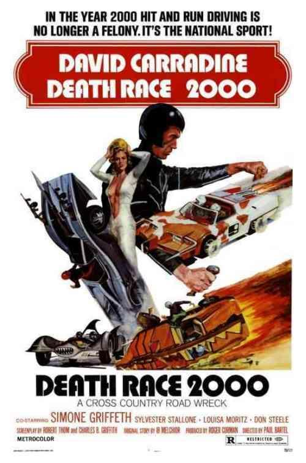

La carrera de la muerte del año 2000
Ficha
- Año: 1975
- País: Estados Unidos
- Director: Paul Bartel
- Reparto:
- David Carradine
- Simone Griffeth
- Sylvester Stallone
- Mary Wonorov
- Género: Acción | Ciencia ficción | Distopía
Sinopsis
<<<<<<< HEAD 1979 brachen die Vereinigten Staaten zusammen, was zu massiven Unruhen und wirtschaftlichen Zusammenbrüchen führte. Die Regierung wurde in einem totalitären Regime nach Kriegsrecht umstrukturiert. Um die Bevölkerung zu beruhigen, hat die Regierung das Transcontinental Road Race organisiert, bei dem eine Gruppe von Fahrern mit ihren für Gewalt, Blut und unschuldige Fußgänger, die von Bonuspunkten betroffen sind, berüchtigten Hochleistungsautos quer durch das Land fährt. p> Im Jahr 2000 gehörten zu den fünf Fahrern des zwanzigsten Jahresrennens, die sich an Wrestling-Profis halten und die Themenautos richtig fahren, Frankenstein, der mysteriöse Champion in Schwarz und Nationalheld; Maschinengewehr Joe, ein harter
Gangster aus Chicago; Unglück Jane, ein Cowgirl; Matilda El huno, eine Neonaziin; Und Nero der Held, ein römischer Gladiator. Jede Einheit mit einem Browser des anderen Geschlechts, der implizit auch als Liebesinteresse fungiert. Das Rennen
wird im nationalen Fernsehen von einem Nachrichtenteam übertragen, das von dem lebhaften und komischen Junior Bruce, der verführerischen Matrone Grace Pander und dem lakonischen Kommentator Harold (eine Parodie von Howard Cosell) angeführt
wird. Das Spiel hat sadistische Regeln, nach denen das Töten von Babys und behinderten Menschen dem Spieler zusätzliche Punkte einbringt. Maschinengewehr Joe ist die Hauptgegnerin von Frankenstein.

Eine von Thomasina Paine, einem Nachfahren des amerikanischen Revolutionärs Thomas Paine, angeführte Widerstandsgruppe will gegen das Regime des Präsidenten rebellieren, indem sie das Rennen sabotiert, die meisten Fahrer tötet und Frankensteins Geisel als Hebel gegen den Präsidenten nimmt. Unterstützt wird die Gruppe von der Urenkelin von Paine Annie, der letzten Navigatorin von Frankenstein. Sie plant, ihn in einen Hinterhalt zu locken, um ihn durch einen Doppelgänger zu ersetzen. Trotz einer von Frau Paine selbst ausgestrahlten Raubkopien-Sendung wird der Zusammenbruch des Widerstands der Rasse von der Regierung gedeckt und stattdessen den Franzosen die Schuld gegeben, die auch die Wirtschaft und das System des Landes ruiniert haben Telefon.
Zunächst funktioniert der Widerstandsplan. Nero wird getötet, als er auf eine vom Widerstand gefangene Puppe läuft, die einen Fehler für ein echtes Baby macht und sie ausführt, um Punkte zu sammeln. Matilda führt eine Klippe an, während sie einem falschen Umweg folgt, der vom Widerstand verursacht wurde. Unglück Jane fährt versehentlich eine Landmine. Dies lässt nur Frankenstein und das Maschinengewehr Joe im Rennen
Da Frankenstein nicht alle Versuche überlebt, die er in seinem Leben während des Rennens unternommen hat, stellt Annie fest, dass der Frankenstein, den sie kennt, alles ist, aber weder ein williger Regierungsbeamter noch der ursprüngliche Mann. Der derzeitige Frankenstein ist in der Tat einer von mehreren zufälligen Flügeln des Staates, die ausschließlich darauf trainiert sind, in Identität zu fahren. "Wenn einer ausgeht, bringen sie einen anderen", sagt er zu Annie. Der aktuelle Frankenstein verrät auch, dass er seine eigenen Pläne hat: Wenn er das Rennen gewinnt und dem Präsidenten die Hand schüttelt, wird er eine Granate zur Explosion bringen, die in seine rechte Handprothese implantiert wurde (er nennt sie "Handgranate") Er hat sich versteckt gehalten und seinen Handschuh immer angezogen (auch während er sich auszog). Sein Plan geht jedoch schief, als das Maschinengewehr Joe angreift und Annie ihn mit Frankensteins "Hand" -Granate tötet.
Frankenstein, der die Piloten und den Widerstand des Gegners erfolgreich überholt hat, wird zum Sieger erklärt, obwohl er verletzt ist und seinen ursprünglichen Granatenangriffsplan nicht ausführen kann. Annie bevorzugt Frankensteins Kostüm und plant, Mr. President auf dem Podium zu erstechen. Während der Präsident "Frankenstein" zu seinem Sieg gratuliert, dabei den Franzosen den Krieg erklärt und Frankenstein zur Kriegsführerin ernennt, wird Annie von ihrer eigenen Großmutter verletzt, die verzweifelt nach Rache an Frankenstein für die angebliche Ermordung von Frankenstein während des Krieges sehnt Karriere (er hatte sie nur wirklich unter Drogen gesetzt). Der echte Frankenstein nutzt die Verwirrung und streichelt mit seinem Auto die Bühne des Präsidenten, um schließlich seinen Wunsch zu erfüllen, ihn ein Leben lang zu töten.
Im Nachwort heiraten Annie und Frankenstein. Frankenstein, jetzt Präsident, unterdrückt das Rennen und plant den Wiederaufbau des Landes. Junior Bruce beginnt jedoch, gegen sie zu protestieren. Wenn er keinen moralischen Grund findet, seine Karriere fortzusetzen, beginnt er zu schreien, dass es eine Lebenseinstellung ist, Amerika zufrieden zu stellen, die Menschen zu unterhalten und ihnen zu geben, was sie wollen. Ärgerlich Frankenstein fährt ihn mit seinem Auto an und geht mit Annie zum Applaus und Applaus der Menge.
=======En 1979, los Estados Unidos se derrumbaron, dando lugar a disturbios civiles masivos y colapso económico. El gobierno se reestructuró en un régimen totalitario bajo la ley marcial. Para pacificar a la población, el gobierno ha organizado la Transcontinental Road Race, donde un grupo de conductores está conduciendo a través del país en sus automóviles de gran potencia, infames por la violencia, gore y peatones inocentes golpeados por puntos de bonificación.
En el año 2000, los cinco pilotos de la vigésima carrera anual, que se adhieren a personas de estilo profesional de lucha libre y conducen adecuadamente los coches temáticos, incluyen Frankenstein, el misterioso campeón vestido de negro y héroe nacional; Machine Gun Joe, un gángster de tipo duro de Chicago; Calamity Jane, una vaquera; Matilda El huno, un neonazi; Y Nero el héroe, un gladiador romano. Cada unidad con un navegador del sexo opuesto, que también implícitamente funciona como un interés amoroso. La carrera está cubierta en la televisión nacional por un equipo de noticias encabezado por el bullicioso y cómico Junior Bruce, la seductora matrona Grace Pander, y el lacónico comentarista Harold (una parodia de Howard Cosell). El juego tiene reglas sádicas, donde matar bebés y personas discapacitadas dará al jugador puntos extra. Machine Gun Joe es la principal oposición a Frankenstein.
Un grupo de resistencia dirigido por Thomasina Paine, descendiente del revolucionario americano Thomas Paine, planea rebelarse contra el régimen del presidente saboteando la carrera, matando a la mayoría de los conductores y tomando a Frankenstein como rehén como palanca contra el presidente. El grupo es asistido por la bisnieta de Paine Annie, el último navegador de Frankenstein. Ella planea atraerlo a una emboscada para ser reemplazado por un doble. A pesar de una difusión nacional pirateada hecha por la propia Sra. Paine, la ruptura de la resistencia de la carrera está cubierta por el gobierno y en su lugar culpó a los franceses, que también son culpados por arruinar la economía del país y el sistema telefónico.
Al principio, el plan de la Resistencia funciona. Nero es asesinado cuando corre sobre una muñeca atrapada por la Resistencia, que comete un error por un bebé real y procede a ejecutarlo para ganar puntos. Matilda conduce un acantilado mientras sigue un falso rodeo creado por la Resistencia. Calamity Jane conduce inadvertidamente una mina terrestre. Esto deja sólo Frankenstein y la ametralladora Joe en la carrera.
Como Frankenstein no sobrevive a todos los intentos realizados en su vida durante la carrera, Annie llega a descubrir que el Frankenstein que ella sabe es cualquier cosa, pero no es un oficial de gobierno dispuesto, ni es el hombre original. El Frankenstein actual es, de hecho, uno de un número de alas al azar del estado entrenado exclusivamente a la raza en la identidad. "Cuando uno se agota, traen otro", le dice a Annie. El actual Frankenstein también revela que tiene sus propios planes: cuando gane la carrera y estreche la mano con el Sr. Presidente, detonará una granada que se ha implantado en su prótesis de la mano derecha (la llama "granada de mano"), Que él ha guardado ocultado guardando su guante encendido en todo momento (incluso mientras que desnudó). Su plan va mal, sin embargo, cuando la ametralladora Joe ataca y Annie lo mata usando la granada de "mano" de Frankenstein.
Después de haber superado con éxito a los pilotos rivales ya la Resistencia, Frankenstein es declarado el ganador, aunque está herido e incapaz de llevar a cabo su plan original de ataque con granadas. Annie prefiere el disfraz de Frankenstein y planea apuñalar al Sr. Presidente mientras está en el podio. Mientras el presidente felicita a "Frankenstein" por su victoria, en el proceso declarando la guerra a los franceses y nombrando a Frankenstein como líder de la guerra, Annie es herida por su propia abuela, desesperada por venganza contra Frankenstein por haberla matado supuestamente Durante la carrera (en realidad sólo la había drogado). El verdadero Frankenstein se aprovecha de la confusión y acaricia el escenario del presidente con su coche, finalmente cumpliendo su deseo de matarlo por toda la vida.
En el epílogo, Annie y Frankenstein se casan. Frankenstein, ahora Presidente, suprime la carrera y planea reconstruir el país. Sin embargo, Junior Bruce comienza a protestar contra ella. Cuando no puede encontrar una razón moral para continuar la carrera, comienza a gritar que es una forma de vida, para mantener a América satisfecha, para entretener y dar a la gente lo que quieren, ahora desesperado para que la carrera perpetúe. Frankenstein, molesto, lo ejecuta con su coche y se va con Annie a los aplausos y aplausos de la multitud.
>>>>>>> pmf-logotipo